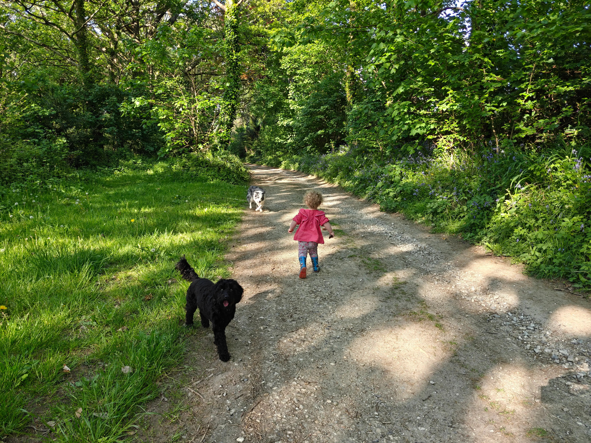
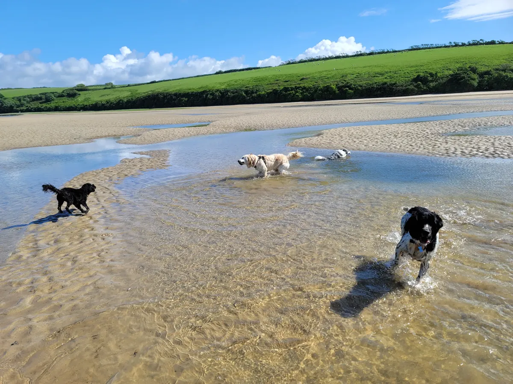
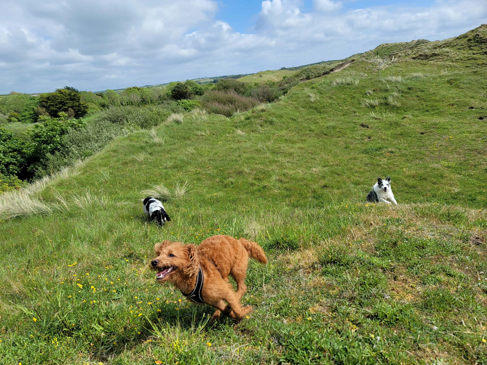
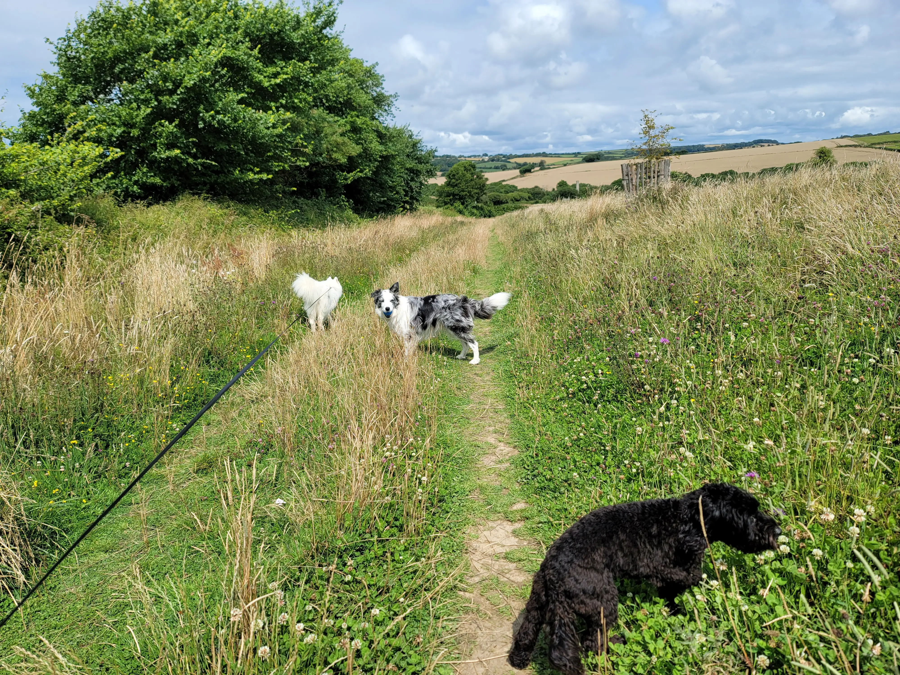

Dog Walking Areas Across Newquay & Cornwall
From wide sandy beaches to tranquil estuaries and dramatic cliff paths, Newquay and its surrounding areas offer some of the best dog walking locations in Cornwall. We rotate our routes to keep things fresh and exciting for your dog, choosing locations based on the weather, tides, and your dog's preferences.

Fistral Beach
One of Cornwall's most famous beaches and a stunning location for dog walks. Dogs are welcome year-round on the southern end near the Headland, making it a reliable spot in every season. During summer months (Easter to 30 September), dogs are restricted from the main surfing beach between 10:00 and 18:00, but this works perfectly for our evening walk schedule. As the crowds head home and the sun drops towards the Atlantic, Fistral becomes a peaceful paradise for dogs to run, explore, and splash in the shallows. The wide open sands give reactive dogs plenty of space too. Learn more about our walks →

Colan Beach
A quieter, less touristy beach just north of Newquay, Colan is one of our best-kept secrets. It's perfect for dogs who prefer a calmer environment away from the bustle of the more popular beaches. At low tide, the wide sandy expanse opens up beautifully, revealing rock pools that dogs love to investigate. The beach is backed by dramatic cliffs and feels wonderfully remote even though it's just minutes from town. There are no seasonal dog restrictions here, so it's a reliable year-round destination. One of our favourite spots for dogs who are nervous around busy beaches or need a quieter introduction to sand and sea.

The Gannel Estuary
A stunning tidal estuary that winds between Newquay and Crantock, the Gannel is one of the most unique walking spots in the area. At low tide, you can walk across the sandy riverbed — a magical experience for dogs who love to paddle through shallow water and squelch through mud. The estuary is rich in wildlife, with herons, egrets, and even kingfishers regularly spotted along its banks. The changing tides mean no two walks are ever the same. It's a great location for dogs who love water and aren't afraid to get muddy. The sheltered nature of the estuary also makes it ideal on windier days.

Porth Beach & Ellenglaze
Connected beaches just north of Newquay town centre, Porth and Ellenglaze offer a brilliant combination of sandy beach and coastal cliff walking. The cliff path between them delivers spectacular views along the north Cornwall coastline and is well-maintained enough for comfortable walking. Dogs are welcome year-round outside of the main beach area, making the cliff paths a reliable choice whatever the season. This is one of our most popular routes for daycare adventures, as the variety of terrain — sand, grass, rocky paths — keeps dogs engaged and stimulated throughout the walk. See our daycare service →

Crantock & West Pentire
Across the Gannel from Newquay, Crantock is a National Trust managed beach backed by beautiful sand dunes that dogs love to explore. The beach itself is expansive at low tide, with plenty of space for off-lead running and playing. West Pentire headland extends beyond Crantock and offers wild, windswept coastal walks with panoramic views stretching from Trevose Head to St Agnes. The headland is covered in wildflowers during spring and summer, and the circular walk around the point is one of the most scenic in the Newquay area. A firm favourite destination for our weekend daycare pack walks.
Weekend Daycare Adventures
Our weekend daycare adventures also take us further afield to Bodmin Moor, Cardinham Woods, and beaches along the north Cornwall coast. These longer trips give dogs the chance to experience moorland, woodland, and coastal environments all in one day — perfect for high-energy dogs who need that extra stimulation.
Pick-Up Areas
We cover Newquay town centre and surrounding areas including Porth, Crantock, and St Columb Minor. If you're not sure whether we cover your area, just get in touch and we'll let you know.
Ready to Explore?
Book a free meet and greet and let us show your dog the best walks Newquay has to offer.
Get in Touch